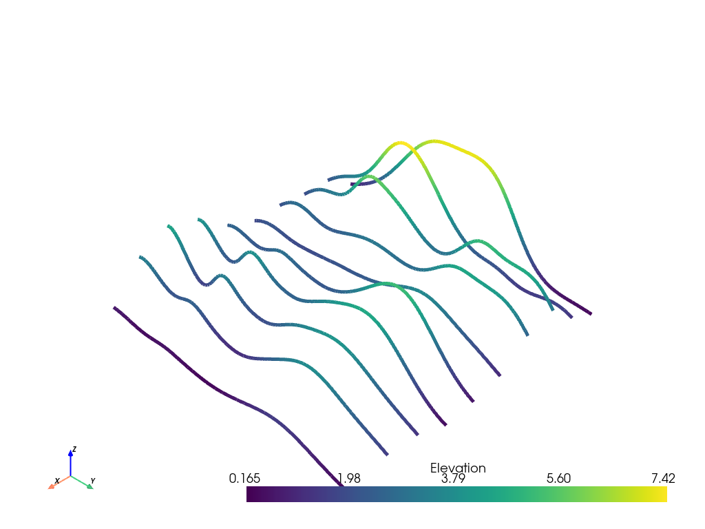
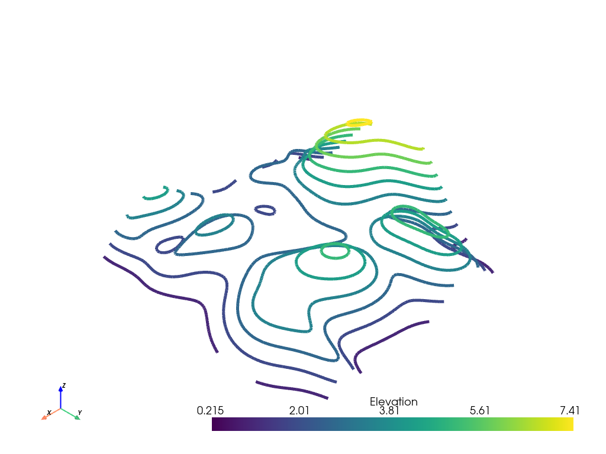

slice_along_axis#
- MultiBlock.slice_along_axis(n=5, axis='x', tolerance=None, generate_triangles=False, contour=False, bounds=None, center=None, progress_bar=False)#
Create many slices of the input dataset along a specified axis.
- Parameters
- n
int,optional The number of slices to create.
- axis
strorint The axis to generate the slices along. Perpendicular to the slices. Can be string name (
'x','y', or'z') or axis index (0,1, or2).- tolerance
float,optional The tolerance to the edge of the dataset bounds to create the slices. The
nslices are placed equidistantly with an absolute padding oftoleranceinside each side of theboundsalong the specified axis. Defaults to 1% of theboundsalong the specified axis.- generate_trianglesbool,
optional If this is enabled (
Falseby default), the output will be triangles. Otherwise the output will be the intersection polygons.- contourbool,
optional If
True, apply acontourfilter after slicing.- boundssequence,
optional A 6-length sequence overriding the bounds of the mesh. The bounds along the specified axis define the extent where slices are taken.
- centersequence,
optional A 3-length sequence specifying the position of the line along which slices are taken. Defaults to the center of the mesh.
- progress_barbool,
optional Display a progress bar to indicate progress.
- n
- Returns
pyvista.PolyDataSliced dataset.
Examples
Slice the random hills dataset in the X direction.
>>> from pyvista import examples >>> hills = examples.load_random_hills() >>> slices = hills.slice_along_axis(n=10) >>> slices.plot(line_width=5)
 Slice the random hills dataset in the Z direction.
>>> from pyvista import examples >>> hills = examples.load_random_hills() >>> slices = hills.slice_along_axis(n=10, axis='z') >>> slices.plot(line_width=5)
 See Slicing for more examples using this filter.